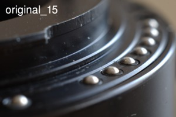
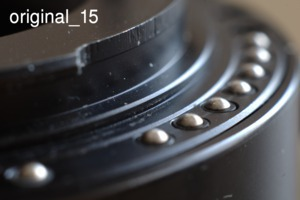
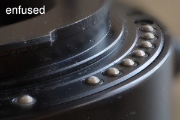

Focus Stacking
Dept of field is usually too shallow if we take macro photos.
In this example I'll take a photo of my extension tube. It is not too spectacular but quite on topic. The distances of the pins from the sensor are not equal.Even if I use the smallest aperture (F22 for my lens) only the middle pins are sharp. The ones too close to us or to far from us are out of focus.

You might think (after checking the images) that the extension tube is in a very bad shape. In fact it works great, the small scratches do not affect it.
One solution to the problem is the focus stacking when we create multiple images (using different focus distances) and merge the images later to create a new image with a much greater depth of field.
Technique
I was using a prime lens (SMC Pentax-A 1:2 50mm) and an 56mm extension tube (the other two elements of the set). This setup has 1.2:1 magnification.
I took 45 pictures.
- Sturdy tripod is a must.
- It is best to create all the pictures using the same lighting conditions.
- We should use the same settings ( ISO, aperture, exposure time, white balance, ... ) for all the pictures.
- My settings: ISO: 200, aperture: F8, exposure time: 1/4 s
- F8 might sound strange because we usually use smaller aperture (e.g. F22) if we need greater depth of field. Since we create multiple images it is not important to use the smallest aperture, the lens perform better at F8. (Well, I should test it.)
- Instead of the focus ring I'm using a macro rail to change the focus. It is a much better and more convenient to use a macro rail.
- It is important not to move the tripod and the camera. Tethering the camera using computer (I was using pkTriggerCord) makes it easier not to move the camera. I adjusted the macro rail using (very carefully) a hex key.
- It is quite obvious that all the parts of our subject should be sharp at least on one of the images. Actually it is better to create more images since it is much easier to merge the images if all the parts are sharp on multiple images.
- It is always important to keep the lens and the sensor clean. In this case it's even more important. A smudge may appear on the final image multiple times.
I don't show all the 45 pictures, but here you can find three:
 

{kind=link}

Image alignment
If we check the images we will can realize that the object "moves", it does not appear on the same place. First we need to align the images.
I'm using align_image_stack for this.
We give the original images as input images (extensiontube_* files in this example) and the result is the exact same number of (slightly resized and repositioned ) images
(ais_extensiontube*.tif in this example).
In theory we need the following command:
align_image_stack -m -a ais_extensiontube_ extensiontube*.png
In the real life image alignment will not always work so I was using the following command:
align_image_stack -c 16 -s 2 -m -a ais_extensiontube_ extensiontube*.png
A few explanations:
-m: We need this for focus stacks. The description from the man page: "Optimize field of view for all images, except for first. Useful for aligning focus stacks with slightly different magnification."-c 16: Number of control points. The default value is 8, using 16 gave me better results.-s 2: Scale down the image by 2^scale. The default value is 1, using 2 is useful if we have lots of blurred areas.
Probably it is possible to find the optimal values using some kind of algorithm, I was using (lots of) trial and error.
I show the previous three images again. Moving the cursor above the images will show the aligned version (there is no change for the first image):

{kind=link}

Fusing the images
After the image alignment we need to merge the images by choosing the sharp part of the different pictures. I'm using enfuse 4.0.
In theory we need this:
enfuse -o output.tif --exposure-weight=0 --saturation-weight=0 --contrast-weight=1 --hard-mask ais_extensiontube_*.tif
Enfuse can use several criteria to check the pixels and choose the optimal source image. For focus stacking the most important is the contrast, that's why the weight for this is 100% (and 0% for exposure and saturation).
We also need --hard-mask otherwise the result is too soft.
In practice I used this command:
enfuse -o output.tif --contrast-edge-scale=0.3 --gray-projector=l-star
--exposure-weight=0 --saturation-weight=0 --contrast-weight=1 --hard-mask ais_extensiontube_*.tif
The documentation of enfuse describes all the parameters and gives us a few hints how to choose the optimal values. Trial and error is also very useful.
The final image can be seen here:
{kind=link}
It can be seen that the edge of the image (specially the top and the right edge) is not sharp because no input image shows this part in focus. We need to crop the image, I just show it for test purposes.
Demonstration video
The following video shows the original images, the aligned images, and the final result. It is much easier to see the the alignment on a video: